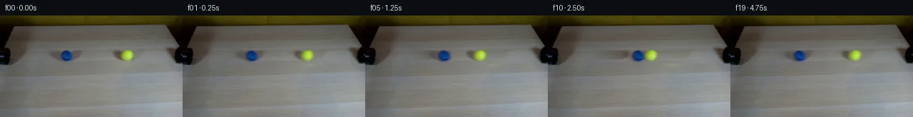

![首帧]()

Round 00
2026-11-05T15:34:31.431681+00:00像素候选变化代码 +175/−0inspection 更新
pixels 09be50a3763df288 · code 8ca25cd6e0774945
查看本轮 generate.py 真实 diff
--- previous/generate.py
+++ current/generate.py
@@ -0,0 +1,175 @@
+"""PixelWorld case_0032 generator.
+
+Blue ball (left pipe) and yellow tennis ball (right pipe) roll toward each
+other at equal speed, collide at the midpoint (frame 10 / 2.5 s) and rebound
+after the equal-mass elastic collision. Static locked-off camera.
+
+Method (see METHOD.md for details):
+ 1. per-row interpolation rebuild of the table with balls/shadows removed;
+ 2. soft RGBA ball sprites + multiplicative shadow sprites extracted from
+ frame 0 (chroma key + background-difference alpha);
+ 3. sub-sampled exposure compositing (5 samples / 0.25 s) onto the static
+ background for frames 1-19; frame 0 is the source PNG verbatim.
+"""
+from pathlib import Path
+import numpy as np
+from PIL import Image
+from scipy import ndimage as ndi
+import artifact_io
+
+CASE = Path(__file__).parent
+SRC = np.array(Image.open(CASE / 'first_frame.png').convert('RGB'))
+H, W, _ = SRC.shape
+f = SRC.astype(np.float32)
+R, G, B = f[..., 0], f[..., 1], f[..., 2]
+LUM = 0.299 * R + 0.587 * G + 0.114 * B
+
+# ---------------------------------------------------------------- masks
+blue_chr = (B - R > 20) & (B - G > 10) & (B > 60)
+yel_chr = (R - B > 45) & (G - B > 55) & (R > 110) & (G > 130)
+
+
+def largest(m):
+ lab, n = ndi.label(m)
+ if n == 0:
+ return m
+ sizes = ndi.sum(m, lab, range(1, n + 1))
+ return lab == (1 + int(np.argmax(sizes)))
+
+
+blue_m = largest(blue_chr)
+yel_m = largest(yel_chr)
+
+
+def centroid(m):
+ ys, xs = np.nonzero(m)
+ return xs.mean(), ys.mean()
+
+
+cb = centroid(blue_m) # blue centre
+cy = centroid(yel_m) # yellow centre
+centres = [cb, cy]
+chroma = [blue_m, yel_m]
+
+# generous rectangles that contain each ball + its left-smeared shadow
+def zone(c, x0=-26, x1=13, y0=-11, y1=12):
+ x, y = c
+ z = np.zeros((H, W), bool)
+ z[int(y + y0):int(y + y1), int(x + x0):int(x + x1)] = True
+ return z
+
+
+zones = zone(cb) | zone(cy)
+
+# ------------------------------------------- clean background (row interp.)
+bg = f.copy()
+for y in range(H):
+ xs = np.flatnonzero(zones[y])
+ if not len(xs):
+ continue
+ # split into contiguous spans
+ cuts = np.r_[0, np.flatnonzero(np.diff(xs) > 1) + 1, len(xs)]
+ for s, e in zip(cuts[:-1], cuts[1:]):
+ a, b = xs[s], xs[e - 1]
+ lx, rx = max(a - 1, 0), min(b + 1, W - 1)
+ t = (np.arange(a, b + 1) - lx) / max(rx - lx, 1)
+ bg[y, a:b + 1] = f[y, lx] * (1 - t[:, None]) + f[y, rx] * t[:, None]
+
+LBG = 0.299 * bg[..., 0] + 0.587 * bg[..., 1] + 0.114 * bg[..., 2]
+dark = np.clip(LBG - LUM, 0, None) # >0 where source darker than bg
+chroma_any = blue_m | yel_m
+
+# ------------------------------------------- ball sprites (soft RGBA)
+def ball_alias(chrm, c, r):
+ # grow the chroma core into the blurred rim, then feather
+ grown = ndi.binary_dilation(chrm, ndi.generate_binary_structure(2, 2), 2)
+ yy, xx = np.mgrid[0:H, 0:W]
+ disk = ((xx - c[0]) ** 2 + (yy - c[1]) ** 2) <= (r + 1.6) ** 2
… diff truncated; 88 more lines …